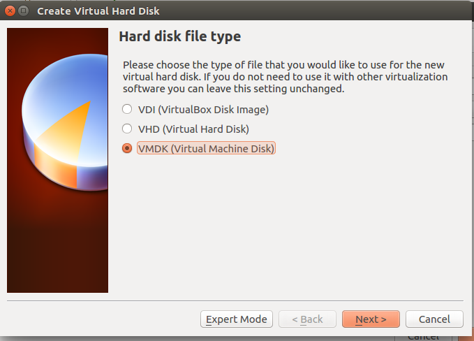
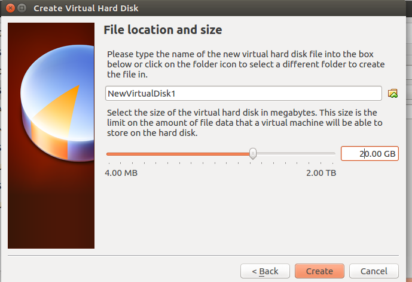
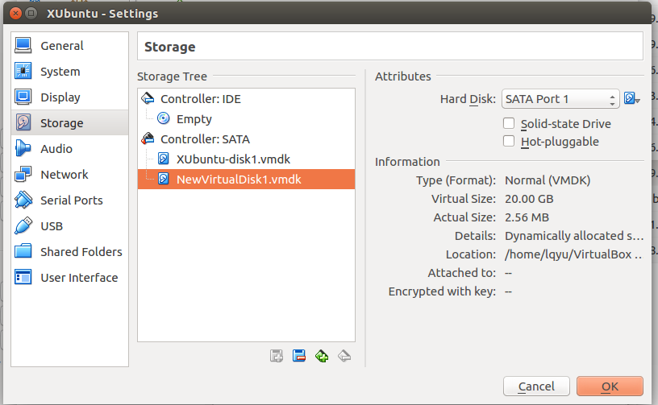
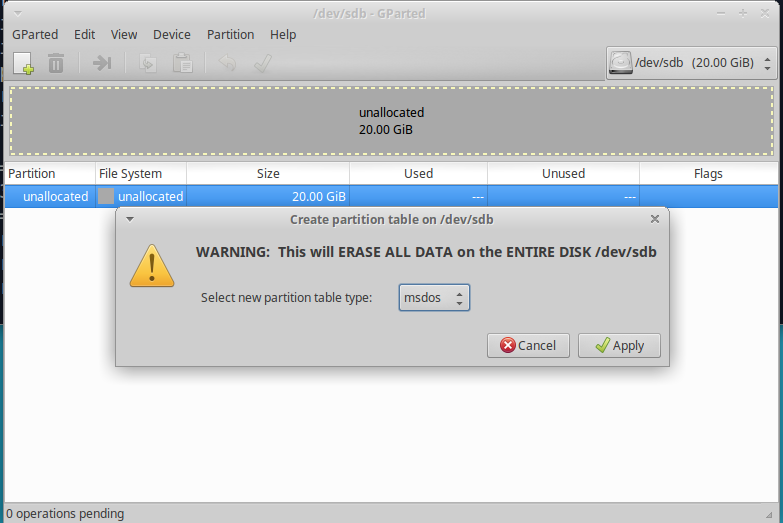
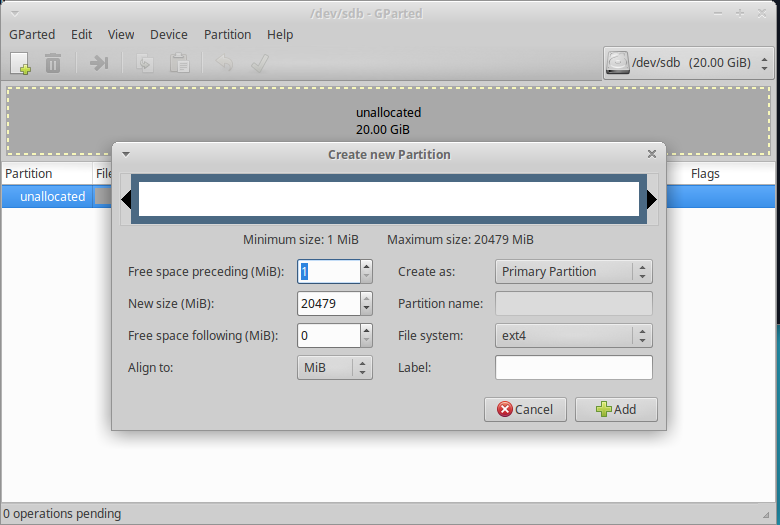
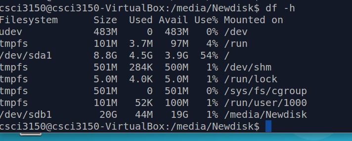
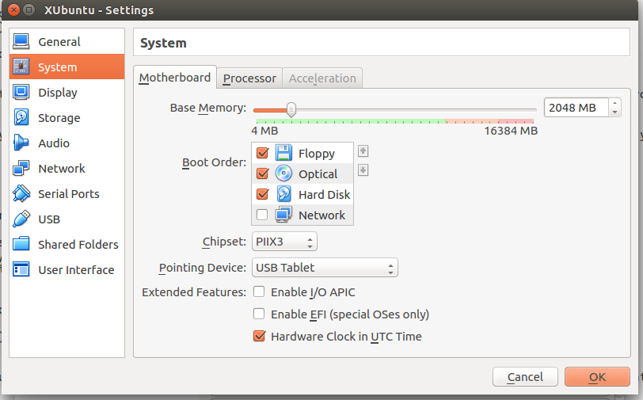

Change the VM setting
Adding a system call need to recompile the linux kernel from source. To have enough space to compile the kernel, we will add an extra disk into our VM. By the way, we also need to increase the CPU memory to sucessfully use the new kernel. I recommend you download a new image to do the following experiments.
Add extra disk in the VirtualBox setting
Open the setting of our machine image. Select "Storage" item and next select "Controller:SATA" item.

Click right "add" button and create a disk file 
Set the disk size to 20GB

Now, the setting looks like

Click "OK" and continue to mount this new disk in our linux VM.
Partition
The easiest and user-friendly way is probably to use gparted to partition the new disk.
Open the terminal and install it
sudo apt-get install gparted
Start this tool
sudo gparted
Select /dev/sdb and click 'Device'-->'Create Partitio Table...'. Use default setting and click 'Apply'.

Click 'New' button and create new partition. 
Apply all operations and exit.
Mount
After you are done creating your partitions (most likely it will be just one ext4 data partition, since this is your additional storage drive), you need to permanently mount it.
At this step you already know what names your new partition(-s) have. If not sure, following command will remind you about existing drives and partitions on them:
sudo fdisk -l
Then create a new folder and try mounting it with
sudo mkdir /media/Newdisk
sudo mount -t ext4 /dev/sdb1 /media/Newdisk
sudo chown csci3150 csci3150 /media/Newdisk
Then this new disk is mounted to '/media/Newdisk' and you can use df -h to show that.

Note: Everytime when you reboot the system, you need to re-mount this disk again. If you want to permanently mount it. You can refer this link
Increase CPU memory
Open the setting of our VM image. Select "System" item and change the base Memory to 2048MB.
